codly.indent-guides
Configures optional vertical guides at complete indentation levels in a code block.
Signature
codly.indent-guides(
enabled: bool = true,
width: auto | int = auto,
blank-lines: bool = true,
rainbow: auto | bool = auto,
palette: auto | array<color> = auto,
depth-offset: auto | int = auto,
color: color = luma(70%),
thickness: length = 0.5pt,
x-offset: length = 0pt,
)The fields can also be supplied as a dictionary. A boolean casts to enabled.
Fields
| Field | Type | Default | Meaning |
|---|---|---|---|
enabled |
bool |
true |
Draws indentation guides when enabled. |
width |
auto | int |
auto |
Spaces per indentation level. auto votes on observed indentation changes. |
blank-lines |
bool |
true |
Continues shared guide levels across interior blank lines. |
rainbow |
auto | bool |
auto |
Colors guides by level; auto follows whether delimiter rainbow coloring is enabled. |
palette |
auto | array<color> |
auto |
Nonempty colors for rainbow guides; auto shares the delimiter palette. |
depth-offset |
auto | int |
auto |
Nonnegative palette offset; auto shares the delimiter offset. |
color |
color |
luma(70%) |
Guide color when rainbow coloring is disabled. |
thickness |
length |
0.5pt |
Positive stroke thickness. |
x-offset |
length |
0pt |
Horizontal guide shift; positive moves right and negative moves left. Supports em lengths. |
Behavior
Set the block-level indent-guides field to true for defaults, false to disable inherited guides for one block, or a configuration to customize them. Interior blank lines continue only the levels shared by the surrounding nonblank lines when blank-lines is true; leading and trailing blank lines have no inferred guides.
With rainbow: auto, guides use delimiter rainbow colors when delimiter rainbow is enabled. Explicit rainbow: true enables palette coloring; false uses color. An explicit palette or depth offset overrides values inherited from delimiter rainbow settings. The palette must not be empty, width must be positive or auto, depth offset must be nonnegative or auto, and thickness must be positive. Invalid field types are rejected by the declared types.
Guides follow source indentation and extend across wrapped visual rows when smart indentation is enabled. x-offset shifts all guides horizontally without changing source columns.
Example: Basic Usage
#import "@preview/codly:2.0.0" as codly
#codly.new(
```text
root
child
leaf
sibling
root
```,
indent-guides: if guides-enabled { (width: guide-width) } else { false },
)Edit & run on your device
The controls supply the example variables. Their definitions are hidden here; Copy code includes the current values and your edits.
